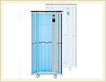
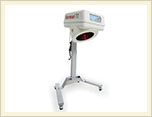
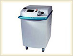
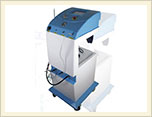
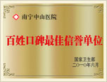

- 
- 
- 
- 

- 
【核心提示】白癜风是世界级的医学难题， 但并非是"不治之症"，白癜风患者必须树立科学的治疗观相信科学，反对迷信，拒绝各种偏方、秘方，依靠切实有效的特色诊疗技术，用积极的心态来面对这一皮肤顽疾，癜风是可以治好的。
白癜风是一种常见多发的色素性皮肤病.该病以局部或泛发性色素脱失形成白斑为特征，是一种获得性局限性或泛发性皮肤色素脱失症，是一影响美容的常见皮肤病，易诊断，治疗难.中医医学称之为"白癜风"或"白驳风"，医学上通常把这种病变叫色素脱失.南宁中山医院专家表示，白癜风患者如果长期得不到正规、有效的治疗，其对健康造成的危害也将不堪设想。
1、局限型白斑:白斑大小不一，孤立或成群分布在身体的某一部位。
2、散发型白斑:指白斑呈散在性、多发性，往往对称分布，其总面积不超过体表面积的50%。
3、泛发型白斑:泛发性白斑多由散发性发展而来，白斑大多相互融合成不规则的大片，遍及体表的大部分，有时仅残留小片岛屿状正 常肤色。
4、肢端型白斑:白斑初发于人体的肢端，如面部、手足指趾等暴露部位，而且主要分布在这些部位，少数可伴发躯体的泛发性白斑。
黑色素细胞种植疗法是由南宁中山医院独创的白癜风治疗方法，该疗法根据中医治疗皮肤病的祖传秘方，结合医院拥有多年治疗皮肤病经验专家的理论实践，同时引入现代西医的快速疗效理念创立的.该疗法从根本上跳出了单纯治疗皮肤病的模式，避免了单一用药千人一方的传统思路，在诊疗的科学性、准确性方面有着显著优势
黑色素种植疗法有效激活黑色素细胞代谢功能，通过应用我国传统中医特效制剂整体调节，攻补兼施.实现药物选择与剂型的互补、病因与作用机理的互补、治疗方法与疾病分期、分型的互补达到有效治愈白癜风的目的
黑色素种植疗法，基于科学确切的检测结果，提取患者自体黑色素基因，分离出活性黑色素，进行黑色素增殖培养，保证黑色素不会凋亡，黑色素细胞成活、分裂，从而快速消除白斑.
结合使用纳米波治疗仪对患处进行三维定向适形放射治疗， 大限度保证光源照射到患处，同时减少对周围正常组织的损害.
辅以内调外治的药物配合，逐渐提高人体自身的免疫力.自觉补充鲜活的黑色素细胞，从而保持黑色素细胞良性动态平衡和自我养护功能，彻底解决复发难题.
色素细胞免疫疗法改变了传统治疗方法的单一性，使药物通过疾病发生发展的各个环节进行阻断，多角度进行击破.
抑制转运到体内的毒物，极大改善机体微循环.干预氧化应激过程，消除自由基，使活体内由于靶细胞的损伤而产生的毒素因子，使其降解，自然排出体外.
激活并增强自身的免疫力，清除黑色素细胞膜上的抗黑色素细胞抗体和色素脱失斑表皮中的朗格汉斯细胞，保护黑色素细胞并增强其活性的作用，使黑色素再生.
通过中药的修复作用，加快皮肤组织的更新和恢复.同时，活血化瘀、扩张局部血管，使黑素细胞可以得到正常的滋养而生长发育，皮肤白斑处恢复正常肤色.
伴随白癜风给患者容貌及身心健康造成的影响的同时，南宁中山医院专家称，如果白癜风患者未得到及时、有效、专业的治疗，还可能给身体造成如下危害:
一、白癜风因为色素细胞凋零，导致皮肤中的色素脱失，从而使皮肤阻挡紫外线的能力大大降低.为此，会造成白癜风患者对紫外线的防御能力差，容易被紫外线伤害而导致各种疾病，如:光敏性皮炎等.
二、白癜风患者皮肤癌的发病率比正常人要高很多.如果白癜风累及虹膜，造成虹膜中的色素减少，则容易形成白内障等眼科疾病.
三、有碍观瞻.这也是白癜风患者 难克服的心理障碍之一.在日益重视外在美的当今社会，白癜风患者的学习、就业、婚姻等等生存条件往往受到很大影响.不可否认的是，社会上有很多人对白癜风患者有一定的歧视，致使广大患者的自尊心受到毁灭性打击，从而导致一系列心理方面的疾患.
四、可遗传.在国内调查，患者亲属中白癜风发病率约在3%-12%之间，国外统计资料表明在18%-40%之间. 而且白癜风的发病和神经精神因素关系很大，心情不好，很容易诱发该病.需要注意的是:白癜风病人不要找同样是白癜风的对象.
面对危害如此巨大的不死癌症--白癜风，致力于服务人类健康的医学界从未停止过对其治疗方法的研究.而作为广西乃至全国皮肤病诊疗中心的南宁中山医院，通过斥资引进国外先进诊疗设备，聘请国内知名白癜风诊疗专家，开设全国首家白癜风专科诊疗中心，想白癜风患者所想，切身投入白癜风病症的治疗红海当中.凭借在技术上追求精益求精的医疗精神，勇攀医疗技术高峰，有效攻克了白癜风医学难题.
为此，张女士还专门送上"医德高尚，妙手回春"的锦旗聊表她对南宁中山医院专家们的谢意.
28岁的张女士是广西人，身患白癜风让她受尽了困扰.从发病到治疗有6年多的时间，这6年来让她吃尽了苦头.手指、脚背、前胸皆大面积白斑，皮损严重，尤其是面部直接影响了她的心理健康，平时不愿意与社会交往，导致她性格上的自卑、孤独、封闭，思想压力重、沉没寡言.6年来，她到全国很多医院求治，虽控制了病情的发展，但始终不能痊愈，让她无法面对工作和生活.
去年10月份，患者家属在网络上看到我们的治疗信息后，立即拨通了南宁中山医院皮肤科诊疗中心的咨询热线，在详细了解了我们的相关疗法后，请了长假来我院治疗，做好长期治疗的打算.来院后我院专家柳在华诊断病情后，针对其病情对张女士采用了黑色素细胞种植疗法进行治疗，经过专家们二个疗程的精心治疗，张女士脸上、手上的白斑竟然消退了，这让张女士仿佛看到了希望，整个人变得开朗了许多，经过巩固治疗现已基本康复，至今未复发。
小蒙的脸上和鼻头上布满了大大小小的雀斑，虽然她很优秀，可是那【详情】
患者姓名：徐女士 患者年龄：30岁 患者职业：公司经理 患者心声【详情】